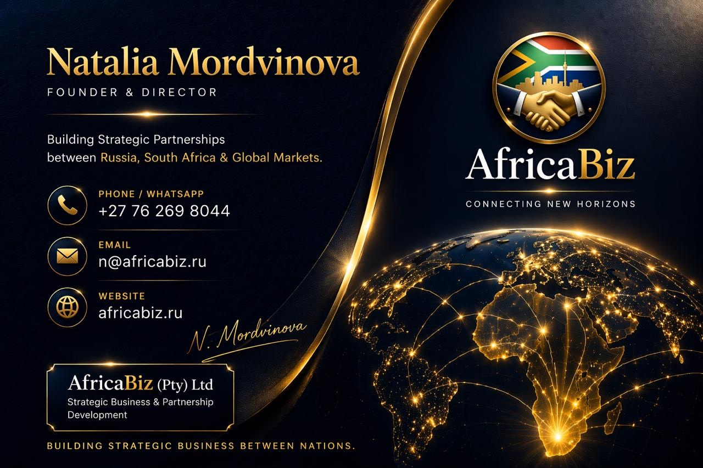

A new category of business infrastructure where each company operates its own AI-powered Virtual Machine — and together, those machines form the most intelligent trade ecosystem Africa has ever seen.
Studex sits at the apex — the ecosystem orchestrator. Below it, five Virtual Machines, each a dedicated business environment. Every VM is connected to Studex and to each other through co-collaborative working groups.

Each Virtual Machine is a dedicated, private AI-powered environment. Your agents work. You approve. The ecosystem compounds.
Five organizations. Five Virtual Machines. One shared mission to bring the world's best technology to Africa — and take Africa's best to the world.
AfricaBiz is the gateway — the company that made SA–Russia Trade Week 2026 possible and the strategic partner that hosts and enables all four founding cohort companies entering the Studex ecosystem. Under Natalia Mordvinova's leadership, AfricaBiz has built the most significant private SA–Russia business corridor of the decade.
Within the ICVMS, AfricaBiz operates as the relationship intelligence layer — managing the cultural, logistical, and commercial bridges between Russian companies and their South African market entry. Their VM ensures every partner company is contextually prepared for the African market before they arrive.
Together with Studex, AfricaBiz co-hosts the working group sessions, coordinates the Friday ecosystem calls, and ensures the community stays cohesive across time zones and languages. The corridor they have built is not a transaction — it is a civilizational connection.
NtechLab is the world's #1 ranked facial recognition and computer vision company — confirmed by NIST, deployed in 26 countries, and already operating in South Africa after a landmark shopping centre pilot in April 2026. Their technology processes 1.5 billion faces in under 0.3 seconds.
Within the Studex ecosystem, NtechLab and Studex are building a comprehensive computer vision strategy for Africa — starting with infrastructure security, retail intelligence, and public safety applications, and expanding into smart city technology across the continent.
Beyond the technology deployment, the NtechLab working group within ICVMS will build Africa's Linux and open-source developer community — hosting hackathons, online gaming events, and skills development programmes for young African engineers. The goal is not just to deploy AI in Africa, but to build the generation that will build the next wave of African AI.
ART Engineering MDC is Russia's largest data centre company — 50+ facilities, TIER III and IV certified, capable of operating in the most extreme climate conditions on Earth. They don't just build data centres. They build the sovereign infrastructure that allows nations to own their digital future.
The Studex partnership with ART Engineering is foundational to the entire ICVMS architecture. Together, we will build private data centres in Africa — physical infrastructure owned and operated on African soil — where Virtual Machines run with true data sovereignty. Every ICVMS VM will eventually have the option to run on African-owned, ART-engineered infrastructure.
The working group strategy goes further: the private data centres will host the agents themselves. Each business in the ICVMS ecosystem will have a dedicated physical home — a real machine, in Africa, executing real business goals. This is the business-in-a-box made physical. AI not as a cloud service, but as owned infrastructure with compounding returns.
Pharmasyntez Group is Forbes-ranked in Russia's top 3 pharmaceutical companies — 100 million packages per year, 9 manufacturing plants, 6,000 employees, and a technology portfolio that includes PCR production and advanced vaccine manufacturing. They are the most capable pharmaceutical partner Africa has ever had access to.
The Studex strategy with Pharmasyntez is to build local pharmaceutical production in Africa — starting with export processing zones in Swaziland and Mozambique, and expanding across East Africa through Tanzania, Mombasa, Rwanda, Uganda, DRC, and Burundi, where cold storage and strategic economic positioning create natural hubs.
The focus addresses the 66% import dependency of African medicines from outside the continent. Starting with tuberculosis, HIV/AIDS treatment, and female hygiene products — basic health and wellness needs that hundreds of millions of Africans lack access to. Studex will build the online distribution layer: health and wellness e-commerce platforms powered by Studex Health, a young Black-empowered company backed by Russian pharmaceutical patents, manufacturing in Africa, for Africa and the world.
Project Phoenix and GRM represent the Studex Wildlife Hypothesis — the conviction that Africa's most endangered species can be protected, restored, and economically sustained through cutting-edge genetic science and agentic business infrastructure. The IVF genetic success of 2024 for the North-West Rhino programme is already proof of concept.
The partnership strategy with GRM focuses on bringing Russia's Foot and Mouth Disease (FMD) vaccine technology to South Africa — manufacturing locally and distributing throughout Africa. This addresses one of the continent's most economically devastating livestock diseases, protecting millions of small-scale farmers and opening new agricultural export corridors that have been closed for decades due to FMD status.
The working group extends into youth development, university partnerships, skills exchange, and new medicine and vaccine development for African-specific disease profiles. The dream is not just to save the rhino — it is to build a generation of African scientists, vets, and geneticists who can solve Africa's conservation and agricultural challenges with their own minds and tools.
When all five VMs activate their shared working group channel, the ecosystem enters its most powerful state. Companies that compete globally collaborate here — building joint market strategies, sharing insights, and creating new opportunities for others to join.
The working group is open. Apply, configure, get accepted — and your VM joins this network. The ecosystem creates opportunities not just for the companies in it, but for every young person, every startup, and every community that those companies touch.
The Studex Global Markets Virtual Machine network is open for applications. If your company is ready to operate at the frontier of African trade — apply now.
Applications reviewed on a rolling basis · hello@studexglobalmarkets.com